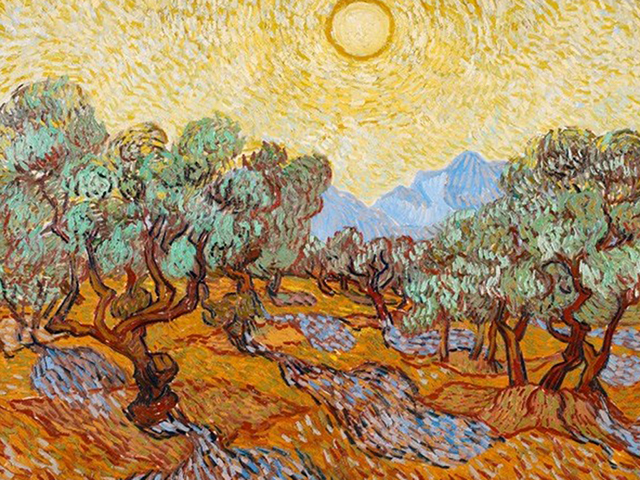
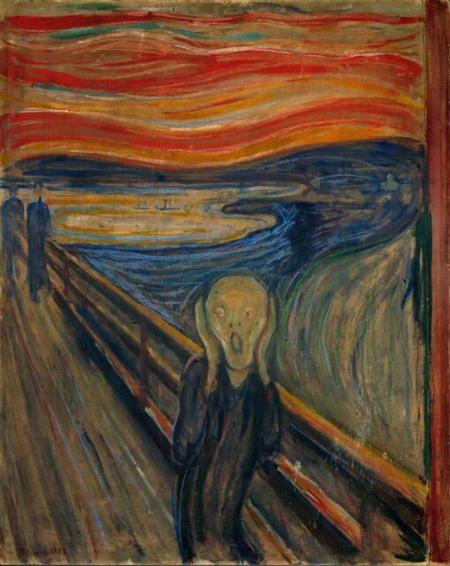

La Notte stellata è un dipinto del pittore olandese Vincent van Gogh, realizzato nel 1889 e conservato al Museum of Modern Art di New York. Vera e propria icona della pittura occidentale, il dipinto raffigura un paesaggio notturno di Saint-Rémy-de-Provence, poco prima del sorgere del sole.
Alberi d'ulivo

Autore:
Vicent Van Gogh
Tecnica:
Olio su tela
Dimensioni:
92 cm × 72.5 cm
Ubicazione:
Museum of art di New York
Descrizione:
Vincent van Gogh dipinse almeno 15 dipinti di ulivi, per lo più a Saint-Rémy-de-Provence nel 1889. Su sua richiesta, visse in un asilo lì dal maggio 1889 al maggio 1890 dipingendo i giardini del manicomio e, quando aveva il permesso di avventurarsi fuori dalle sue mura, vicino a ulivi, cipressi e campi di grano.
L'urlo

Autore:
Edvard Munch
Tecnica:
Tempera e pastello su cartone
Dimensioni:
91cm×73,5 cm
Ubicazione:
Galleria nazionale, Oslo
Descrizione:
L'urlo è il nome assegnato a una serie di famosi dipinti del pittore norvegese Edvard Munch. Un quadro molto simile è L'ansia, sempre di Munch